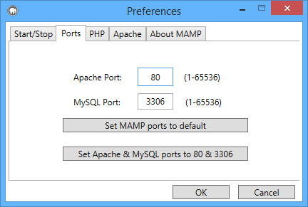

Please Note: All examples assume you have installed MAMP into the C:\MAMP\ directory. If you have installed MAMP in a different location, please check your installation directory and change paths accordingly.
Open the terminal and type the following:C:\MAMP\bin\mysql\bin\mysqladmin -u root -p password <NEWPASSWORD>
Instead of <NEWPASSWORD> use the new password you want.
Afterwards, you also need to change the password for phpMyAdmin and other scripts which are running under MAMP. You can change the password for phpMyAdmin in the file C:\MAMP\bin\phpMyAdmin\config.inc.php
You can change the ports in the Preferences dialog:

By default, PHP and HTML Pages should be copied into the htdocs folder which is located under C:\MAMP\htdocs\. This folder is called "Document Root". You can change the path for the Document Root in the MAMP program under Preferences: